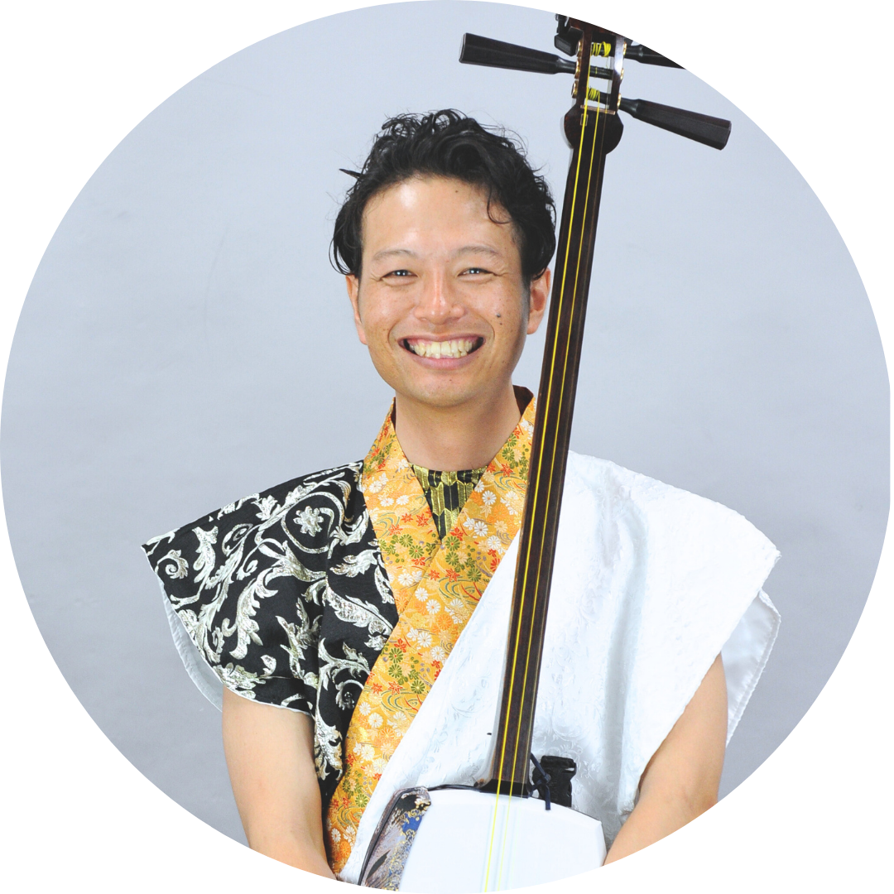
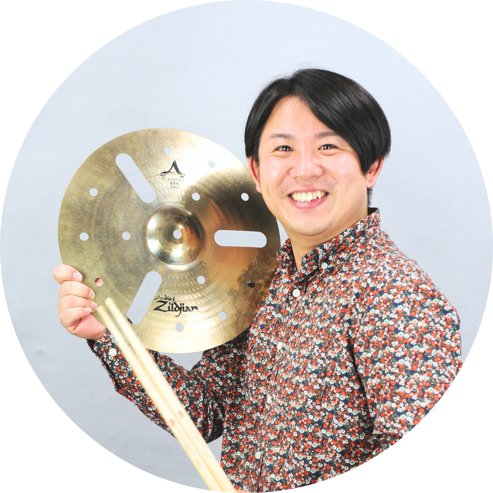
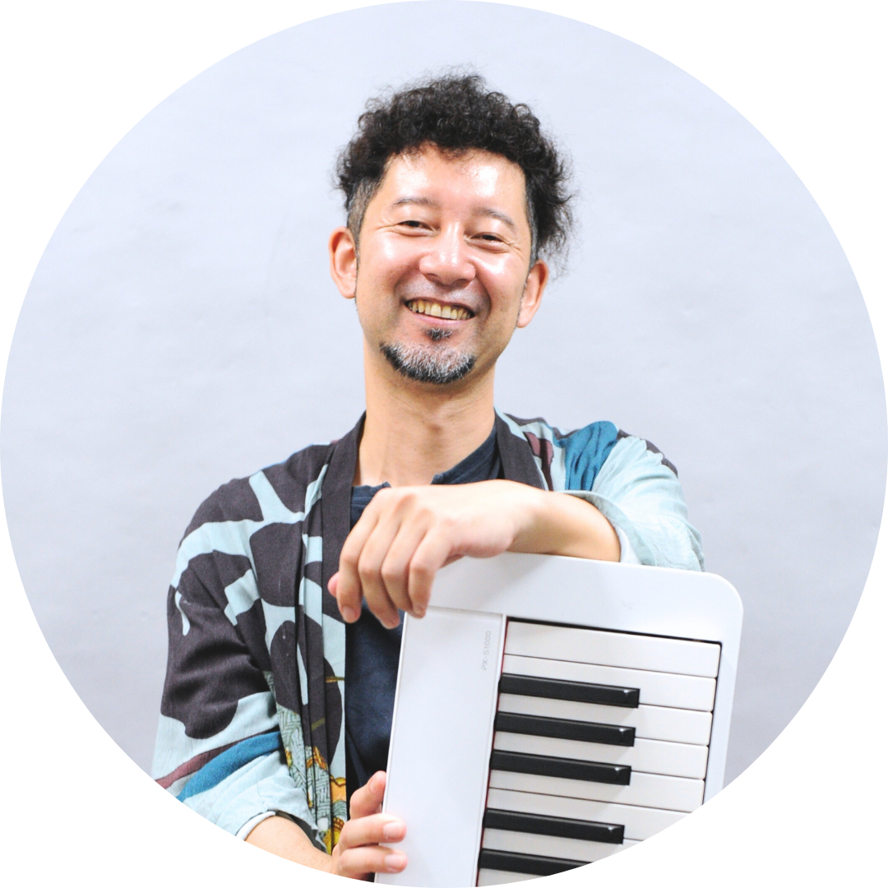

SCHEDULE
ABOUT
芸術文化の融合を、
ひとつのステージへ。
The Beacs（ビークス）は、津軽三味線奏者・鈴木臣吾が主催する音楽プロジェクトです。
津軽三味線の力強い旋律、リズム感あふれる打楽器、鍵盤楽器が描くハーモニー。主要メンバー3人を中心に、時にゲストを迎えながら、愛知県を拠点に、生演奏のライブ活動をしています。
The Beacs = Blend of Entertainment Art Cultures
MEMBERS
音の背景が違う。
だから、面白い。

津軽三味線・和太鼓
鈴木 臣吾
SHINGO SUZUKI
打楽器
弓立 翔哉
SHOYA YUDATE
鍵盤楽器・クリエイター
平尾 卓也
TAKUYA HIRAOMOVIE
音を、映像で。
PERFORMANCE
景色に、
音を重ねる。
津軽三味線、和太鼓、打楽器、鍵盤楽器によるオリジナル音楽プロジェクト。
THE BEACS PROJECTは、それぞれの個性を生かしながら、その場所にしか生まれない音楽をつくっています。
オリジナル楽曲のみで構成したステージをお届けしています。
神社仏閣、ホール、宿泊施設、学校、企業イベント、野外フェスなど、場所や空間をより魅力的にするステージを届けています。
HISTORY
Performance History
演奏履歴を読み込んでいます。
CONTACT